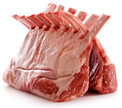

В настоящее время разведение коз стало довольно популярным занятием по всему миру. Основным преимуществом этого животного является неприхотливость к пище и уходу. Помимо мяса используется также молоко, шкура и шерсть.Бытует мнение, что запах козьего мяса такой сильный, что избавиться от него просто невозможно. Однако этот «аромат» исходит не от мякоти, а от естественных животных выделений – пота и мочи. Для того, чтобы он не распространился на мясо, сначала аккуратно снимают шкуру, а потом тщательно моют руку не давая тем самым распространиться запаху.
В древние времена многими врачами козье мясо воспринималось исключительно как кладезь витаминов и полезных свойств, которые помогают в лечении организма от многих болезней. Этот продукт очень просто усваивается, а наполнен он всеми необходимыми человеку микроэлементами и аминокислотами.
Также козье мясо уникально потому, что только в нем больше воды, нежели жира. Следует отметить, что эти животные не болеют очень серьезными болезнями – туберкулезом и бруцеллезом, которым очень часто болеют коровы. Содержание холестерина в нем меньше, чем в говядине или свинине.
Как выбратьПрежде всего, следует пойти на рынок, а не в магазин. Это связано с тем, что купить свежее козье мясо там гораздо легче, нежели в большом супермаркете. Сразу же обратите внимание на цвет мяса, ведь именно он является самым главным признаком свежести. Затем изучите тщательно поверхность. Для этого к нему можно положить ладонь и она должна остаться абсолютно сухой. Не следует покупать этой продукт, если на нем есть пятна или слизь.
Обратите внимание на запах, он должен быть приятным, а не отталкивающим. Свежее мясо, как и пружина, после нажатия возвращается на свое место.
Как хранитьСамый лучший способ хранения любого мяса – заморозка. Следует отметить, что мякоть, отделенная от кости храниться намного лучше и дольше. Рекомендуется употреблять козье мясо в пищу в течении трех дней, так недолго сохраняются все полезные вещества и микроэлементы.
Отражение в культуреРанее первосвященники, совершая древнееврейский обряд, во время которого отпускались грехи, клали руки на голову козлу. Таким образом, они перекладывали все грехи со всего человечества на это животное. После проведения этого священного обряда козла отпускали в Иудейскую пустыню. Следует отметить, что именно отсюда появилось выражение «козел отпущения».
Пищевая ценность в 100 граммах:| Белки, гр | Жиры, гр | Углеводы, гр | Зола, гр | Вода, гр | Калорийность, кКал |
| 39,1 | 28,6 | - | - | 5 | 216 |
Это мясо очень богато аминокислотами, которые необходимы для нашего организма. В козлятине множество витаминов: тиамин, ретинол, рибофлавин и прочие.
Полезные и лечебные свойстваКозье мясо является важным для нашего организма, поскольку содержит в себе жирные кислоты. Самым главным преимуществом данного продукта является то, что он не поражается никакими паразитами.
Диетологи всегда рекомендуют козлятину пожилым людям, которые страдают атеросклерозом, болезнями сердца и тем, у кого ослаблен иммунитет.
Испокон веков мясо коз считалось «природной аптечкой». Следует отметить, что козлятина содержит небольшое процентное содержание жира, по сравнению со свининой и бараниной. Это делает данный продукт диетическим, поэтому оно пользуется такой популярностью. Его рекомендуют пожилым людям из-за низкого уровня холестерина, который значительно ниже, чем у иных представителей животного мира. Самым вкусным и, пожалуй, самым полезным является мясо довольно откормленных козочек, которым исполнилось всего 1,5 месяца. Такая мякоть отличается своей нежной консистенцией и абсолютным отсутствием какого-либо запаха. Для этого козлят специально, до момента наступления положенного для убоя срока, кормят козьим молоком и иногда подкармливают пшеничными либо ржаными отрубями.
Ничем не уступает по вкусовым качествам и мясо кастрированных животных. В народе таких козлов называют вахули. В их мякоти такое же содержание полезных веществ и витаминов, как и в молоденьких козликах, которых на наших прилавках гораздо труднее найти.
В кулинарииКозье мясо немного светлее баранины, а жир белый и скапливается в брюшной полости. Он может откладываться и под кожей, но в незначительном количестве.
Из молодых особей можно приготовить что угодно, но старых коз издавна принято мариновать. Без этой процедуры их не начинают готовить. Для маринада используют молодое красное вино, но иногда и белое при этом в него добавляют чеснок и ряд специй. Отбивные из козлятины получаются очень сочными. Его можно тушить, а для гарнира можно использовать как картофель, так и любое другое блюдо.
В настоящее время этот продукт пользуется огромным спросом у самых известных ресторанов мира. Мясо нарезается небольшими кубиками, затем солится, слегка посыпается перцем или другими специями. После этого его можно жарить с овощами, тушить, отварить с черносливом или с фасолью. Следует отметить, что мясные рулеты из него получаются просто восхитительными.
Этот продукт не может принести никакого вреда организму. Единственным ограничением для его приема является индивидуальная непереносимость.
Среди коз встречается и довольно удивительные породы, одной из них является миотоническая. Это научное название, а в жизни их называют обморочными. Такое наименование они получили неспроста, поскольку эта порода действительно падает в обморок при каждом испуге. Даже удивление вызывает у них мускульный паралич.